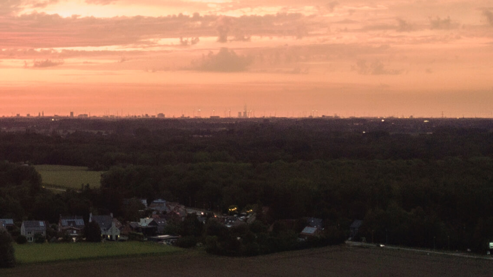

Mijn hobbies en intresses zijn Gamen/Foto’s trekken
Gaming :
Ik heb al veel games gespeel maar de games die het meeste invloed hebben gehad op mijn leven Zijn CSGO, World Of Warcraft en Minecraft.
CSGO:
zal ik altijd onthouden want dat is de game waar mijn vriende group The Tea house gestart is samen met Een van mijn beste vrienden ben ik. 2 mensen tegen gekomen online en 1 van de mensen heeft op mijn leven een super positieve afdruk gemaakt. Wij kwamen super goed over een en bleven mensen waar wij goed mee over een kwamen bij voegen. En nu hebben we een vrienden Group met de naam The Tea House. Daarom zal ik CSGO altijd onthouden want iedereen in onze discord vrienden group zal ik altijd onthouden en zo goed mogelijk bevriend houden.
World Of warcraft:
WoW zal ik altijd een plaats in mijn hart geven om dat deze game mij heeft geleert om Niet op te geven hoe meer tijd je in iets steekt hoe beter je wordt en Dat is iets dat ik heb gemerkt bij WoW Dat ik Daar voor niet echt een voorbeeld voor had.
Minecraft:
Minecraft is een game die je altijd kan opzetten en gewoon tot rust komen. Minecraft is een game die mij enorm helpt rustig te blijven en te ontspannen na een stressvolle periode.
Foto’s nemen is iets dat ik enrom graag doe omdat het een moment is dat je altijd terug naar kan gaan. En als je een mooi uitzicht ziet kan je die onthouden.

deze foto vindt ik echt een heel mooie foto om dat deze heel grijs is maar toch mooie klueren behoud.

net zo als de foto hier voor is het een avond foto waar het grijs is maar toch super kluerijk.
 foto die getrokken is in de lucht door gebruik van een drone.

mooie foto van de wolken boven de tuin.

foto getrokken op de autostraden.

foto getrokken op de autostraden.

deze foto is mooi omdat de zon verstopt zit achter de wolken maar toch is er nog altijd hoop dat hij tevoorschijn komt.

deze foto waar het lijkt dat de wolk een eiland is boven de huizen is heel inspitatie vol voor mij.